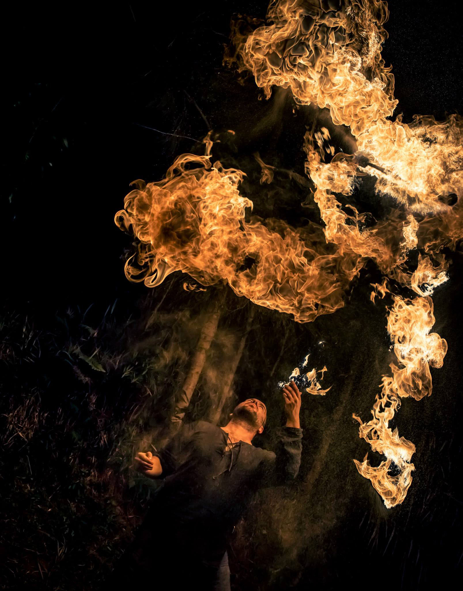
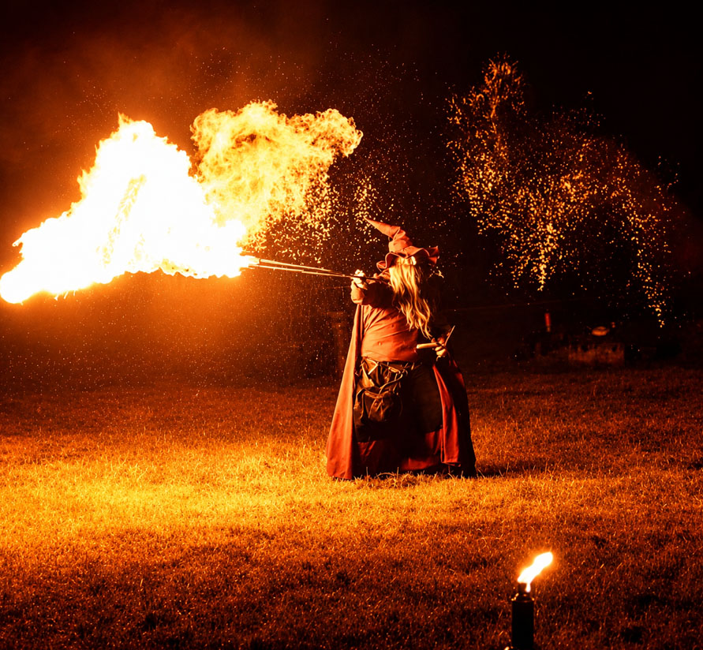
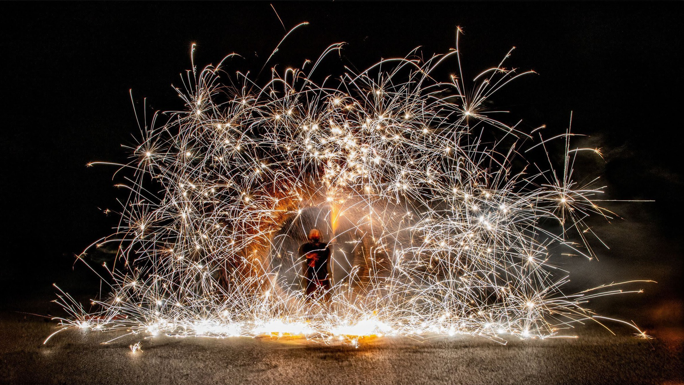

Spectacle Signature
Un spectacle de feu visuel et dynamique où jonglage enflammé et effets pyrotechniques s’enchaînent dans une chorégraphie rythmée et intense.
Découvrir le spectacleJonglage enflammé, manipulation du feu et pyrotechnie se mêlent pour créer des spectacles visuels, dynamiques et surprenants. Proposés en solo et clé en main, mes spectacles de feu associent maîtrise technique, mise en scène et énergie pour offrir au public un véritable moment de spectacle, avec une organisation entièrement prise en charge.

Un spectacle de feu visuel et dynamique où jonglage enflammé et effets pyrotechniques s’enchaînent dans une chorégraphie rythmée et intense.
Découvrir le spectacle
Un spectacle familial et interactif mêlant magie, humour, participation du public et arts du feu.
Découvrir le spectacle
Un spectacle spécial Halloween aussi déjanté qu’enflammé, où personnages loufoques, jonglage, malédictions et pyrotechnie se rencontrent.
Découvrir le spectacle
Un spectacle haut de gamme pour sublimer votre union et émerveiller vos invités. Entrée des mariés, créations enflammées et effets pyrotechniques d’exception. Un final grandiose avec feu d’artifice pour un moment véritablement inoubliable.
Découvrir le spectacleChaque événement a son propre univers. Les spectacles peuvent être adaptés à l’ambiance recherchée grâce au choix de la musique, des agrès, des effets de feu, de la pyrotechnie et de la mise en scène.
Une ambiance mystérieuse, décalée ou inquiétante.
Un spectacle chaleureux et féerique autour de la lumière et du feu.
Énergie, rythme et effets spectaculaires pour célébrer la nouvelle année.
Une création originale autour du feu, de la lumière et de la passion.
Une atmosphère épique peuplée de flammes, de magie et de créatures imaginaires.
Un spectacle imaginé autour de l’univers et de l’ambiance de votre événement.
Vous avez un autre thème ou une idée particulière ?
Parlons-en pour imaginer une prestation qui corresponde réellement
à votre événement.
Que ce soit pour une fête de village, un festival, une soirée d’entreprise ou un événement privé, je propose des spectacles de feu adaptés au lieu, au public et à l’ambiance recherchée.
Des spectacles visuels et marquants pour les temps forts de votre événement.
Une animation originale et accessible à tous pour les fêtes communales et événements locaux.
Des spectacles familiaux adaptés aux kermesses, fêtes d’école et événements associatifs.
Une prestation originale pour créer un moment fort et inoubliable.
Une animation spectaculaire pour vos soirées, séminaires et événements professionnels.
Des spectacles de feu particulièrement adaptés aux animations en montagne et aux événements en station.
Basé en Savoie, j’interviens principalement en Savoie, Haute-Savoie, Isère et dans le Rhône, avec des déplacements possibles dans les départements voisins selon votre projet.
Vous avez un événement ailleurs ? N’hésitez pas à me contacter.
Chaque prestation de feu est préparée avec une attention particulière portée à la sécurité du public, des artistes et du lieu. Découvrez les mesures mises en place pour encadrer les spectacles et prestations de feu.
En savoir plus sur la sécuritéChaque événement étant différent, le tarif dépend notamment du lieu, des conditions d’accueil et des options choisies.
Réponse personnalisée et devis gratuit.